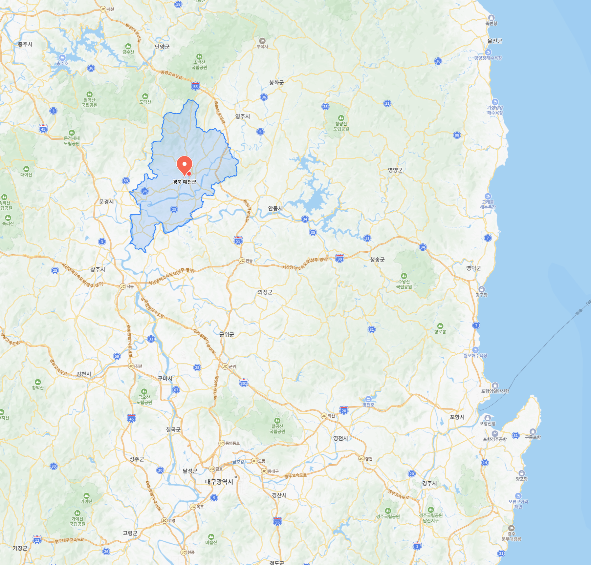

지금은 경기도 살지만
정체성은 경상북도 사람이 아닌 적이 없는데
예천군이라는 곳이 존재하는걸 방금 알았다.
나름 잡지식이 평균이상은 된다고 생각했는데
정체성이 흔들린다.

지금은 경기도 살지만
정체성은 경상북도 사람이 아닌 적이 없는데
예천군이라는 곳이 존재하는걸 방금 알았다.
나름 잡지식이 평균이상은 된다고 생각했는데
정체성이 흔들린다.

공군이기도 했고 원래 유명 사과 산지로 알고있었음
예천은 사과랑 쌀때문에 암
"경북 예천" 으로 익숙한데 경북 어디 붙어있는지는 모름 왜지? 예능 같은거 단골인가? 분명 많이 들어봤는데
나는 내려오기전까지 영양이란 지역이 있는지 몰랏음ㅋㅋㅋ
자기지방다 알아야 하나?
진짜 첨들음
경북인지는 아는데 위치는 모름ㅋㅋㅋ
난 왜 충북 예천으로 알고있었지
알았는데 문경옆인줄은 오늘 알았음 ㅋㅋㅋㅋ
경부타고 오면서 안동 문경 상주 구미 칠곡 대구 밀양 이런식으론 많이 봤는데 표지판에 예천이 안보여...
남자들의 도시이자 양궁의 고장인 예천으로 지명은 들어봤는데 난 충북인줄알았다 ㅋㅋㅋㅋㅋ
도청신도시 있는데..
옛날 사회과부도였나 특산품이 뜬금없이 활이라고 나오길래 아직 기억함..
아니 경북 사람이 3분의 1인게 말이 돼?
몰라도 상관없긴한데 개드립 평균나이가 30살 이상이라고 보면 모르는게 이상하긴하지
시도 아니고 군을 다 외우고 다님?? 82개 전부?
어머니 고향이라 알고있지~ 어제도 다녀옴
아는 사람 고향이라 알았음 그전에는 몰랐음 그냥 시 까지만 알면 안되나 ㅋㅋㅋ 그이상은 몰라
대구 밑쪽에 살았으면 모를수 있을지도?!
경북 예천인건 알고있었는데
알던지 말던지 별 신경 안써도 될 수준임
예천
봉화
청송
의성
울진
이런 동네들 ㅎ
전회사 대표가 예천 사람이라 명절선물 예천에서 나온 농축산물로만 줌
예천 용궁역에 토끼간빵 팜
경기도 출신이지만 친척이 예천 살아서 옛날부터 종종 감ㅋ
전 회사때문에 알았음, 출장 몇번갔었음.
경남사람이라 몰랐는데 1박2일 시즌1 보고 알았음